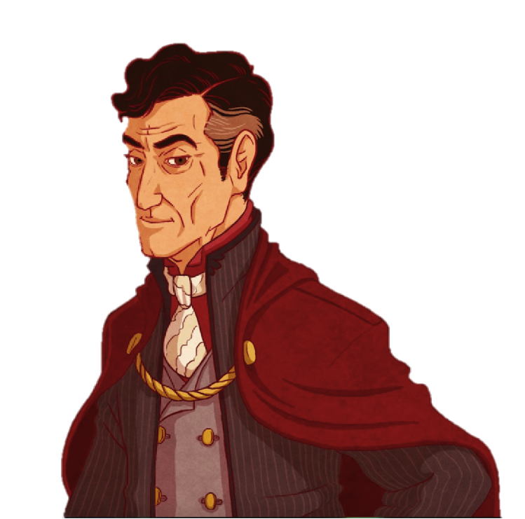

Lucius Malfoy was never nervous. Nervousness was an affliction of people sensitive to fear. Lucius had nothing to fear, because he belonged to that elite group of men in the world that truly are untouchable in the realest possible way. So if his heart beat a little faster in the presence of one Tom Marvolo Riddle, it was not because he was nervous, anxious, or otherwise suffering from fearful anticipation. He could not deny that he was in suspense, bent nearly double in a bow lower than any he would give outside of his leader’s presence. He had reported to Riddle as soon as he’d quit the Hogwarts anti-apparition wards and was waiting for Riddle’s response, whatever it may be.
It was true that Riddle would probably not be happy with the news Lucius had come bearing. Lucius himself was not quite as disappointed as he might have been, but his son’s life had, after all, been in grave and unforeseen danger because of the sickness that had so recently been thwarted. And that was just it. The sickness had been cured.
Lucius wasn’t sure how Riddle was going to take that news. He knew how long his leader—he hesitated to use the word Master, both because a true Malfoy had no master and because that wasn’t really the sort of image the SOW Party wanted to give off—had worked on the sickness. It had been perfect—or so they had thought. Draco’s reaction was of course, unanticipated, and Riddle had apologized for the event already, though of course it was not Riddle who was at fault. When Lucius found out who had been buying up the ginseng crop he would see to it they paid dearly. Still, the sickness was formidable. To think that a boy of eleven had developed a cure, and such an unconventional one at that, well, Lucius was not at all certain what Riddle’s reaction would be.
His spine was slowly stiffening, but he remained with his head and shoulders bowed, staring at the elaborate Indian silk carpet beneath his booted feet until Riddle spoke. To Lucius’ immense surprise, when Riddle bade him rise it was with a soft laugh—a laugh!
“Stand up, Lucius, and come closer so that I don’t have to shout across the room to be heard,” Riddle said, and when Lucius looked up it was to find a smile playing across Riddle’s mouth. Not a politician’s smile, though he was very good at those, but a real one.
Lucius moved forward until he was directly before the golden throne Riddle sat upon in the middle of the cavernous reception room. It was a private joke among the upper tier of their Party that Riddle was King of the Cows. Oh, they knew what their opponents called them. The fools knew nothing. Lucius had had the throne encrusted with emeralds for Riddle’s last birthday, and they winked at him in the light of a hundred candles as he approached his leader.
Tom Riddle was an impressive specimen of a wizard, Lucius could admit that freely and without insecurity. He was tall and well formed, with a politician’s perfect hair and a card sharp’s piercing gaze. Yes, Tom Riddle was impressive in every sense of the word. Then again, Lucius himself was rather impressive if one believed his wife when she was at her most revealing. It was not his physique or political charm that had drawn Lucius to the man and allowed him to bow before him when none other would do. It was his magic. Riddle had the magic of Merlin himself; of this fact Lucius would swear to Mordred. It was wild, it was powerful, and it was wielded by the most capable political mind of the century. Lucius would go far at Riddle’s side, oh yes, he would go very far indeed, just as his father might have were it not for his untimely demise.
Lucius looked Riddle in the eye and said, “Yes, Lord Riddle?”
“So a first-year was able to get around my little bug’s defences, is that what you’re telling me, Lucius?” Riddle asked, that strange smile still tugging at the edges of his mouth.
“Yes, my Lord,” Lucius said.
“Interesting,” Riddle drew out the word as if tasting it for potency, “Yes, very interesting. I admit, I did not think that anyone would be able to penetrate the sickness until I called it back. Not even Severus should have been able to lift the mental barriers from without. I made sure of this, of course, as I knew that his position under Dumbledore’s watchful eye would prompt him to attempt it. Yet from your account this child was able to unravel the defences from within?”
“That is correct, my Lord,” Lucius said, “The boy demonstrated this unusual ability in front of my wife and I. It appears that he is able to enter the mind through a person’s magical core, however ridiculous the idea seems to common logic.”
“Common knowledge is sometimes the least reliable,” Riddle admonished gently, “This ability is most suspect, however. You have felt the boy’s magic?”
Lucius faltered, “Sir, since you have taught me how to sense the magic around a person I have met with great success in my exercise of the ability, however… I have felt nothing from the boy.”
“Nothing, Lucius?” Riddle gazed at him with half-lidded amusement, “We both know that cannot be so.”
“Yes, my Lord,” Lucius said quickly, “I am sure that something is preventing me from accurately assessing his power levels, but through secondary sensing alone I can detect nothing around the boy. I have met him thrice, and each time it is the same. There is none of the wild aura of magic a child of eleven would usually have, especially a magically strong child who does not yet know how to control his power. However…”
“Continue, Lucius,” Riddle said, “Speak your thoughts.”
“The boy intimated that he learnt primary sensing from Severus in an effort to learn conscious potion imbuing earlier in the semester,” Lucius said, “So it is likely that Severus has a better understanding of the child’s magical depths.”
“I shall be having a chat with Severus very soon, it seems, though I know how he dislikes being pulled from his summer experiments,” Riddle chuckled softly, “In any event, the boy does not appear to be a threat to us at the moment. You say he is primarily focused on school work at this time?”
“Yes, sir,” Lucius said, “My son reports that the boy does little besides read about and brew potions when he is not completing his other school work. I, too, believe he is of no danger to our goals at this time.”
“Time, indeed,” Riddle said thoughtfully, “Time is very much on our side. Lucius, you will see that the legislation is tabled for the moment. I have a few changes I’d like to make to the proposal while we have the chance.”
“Yes, my Lord,” Lucius paused, “And the boy?”
“I very much desire to meet this young Slytherin lad, this Rigel Black,” Riddle said, gazing off to the side as he thought, “You will arrange it, Lucius.”
“Of course, sir. What are we to do about Dumbledore, my Lord? He has gained a great amount of support in the wake of the sickness’ cure,” Lucius ventured.
“Dumbledore?” Riddle laughed softly again, “Do not trouble yourself about the good Headmaster. Plans are already being made for September. Not even Dumbledore’s phoenix will be able to rise from the ashes of the next storm I send his way.”
End
